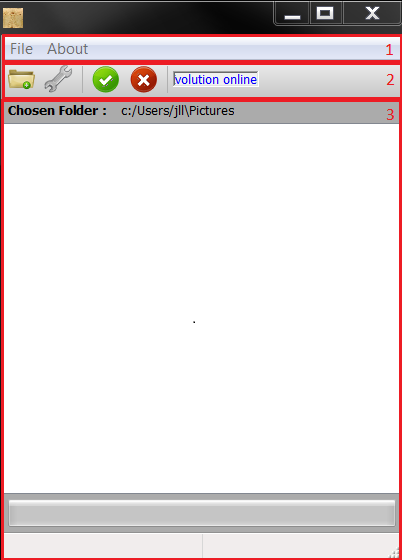
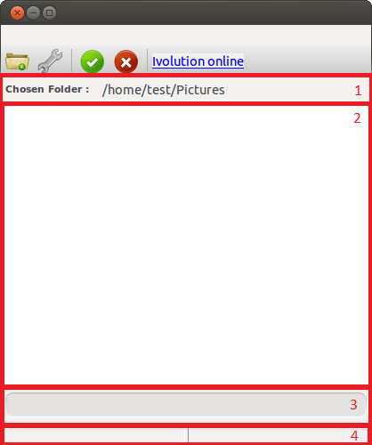
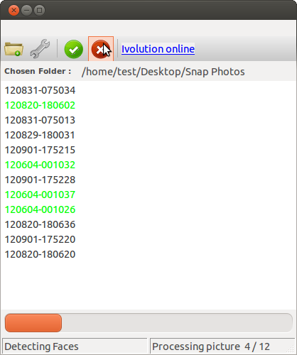
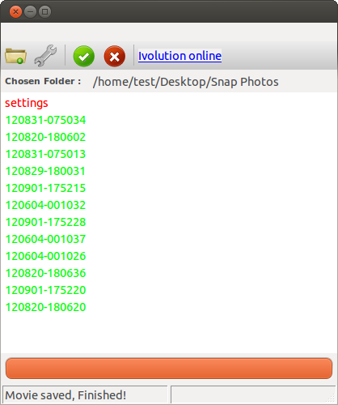

Basic interface
The following picture shows what you should see when launching the Ivolution application.

The main frame is composed of three different parts :
- The Menubar, used to exit the application, have access to this help or see more information about the application.
- The Toolbar, containing all the elements you can use to create your timelapse, such as the start or the stop buttons
- The Main Frame, aiming at presenting all the information and status of the application in real time.
MenuBar
I am quite sure everyone having a computer is used to it, but let's present it anyway !
The elements of the menubar are quite straight speaking :
- The Exit menu will exit the application
- The Help menu will browse the web for the documentation of the application.
- Finally, the About menu will present you more information about the software, such as the main developer (hint : me :)) or the license file.
ToolBar
The toolbar contains several icons, each of them having a precise purpose:
- The first folder button shall be used to define the input folder that will be searched for images. All the images of the folder (and its subfolders) will be used in the timlapse generation
- The second icon opens the settings window. You can learn more about it in the next chapter. For a basic usage, you can just let the default options.
- Then come the start and stop buttons. Once you input folder is chosen, you can start the application by pressing the green button. Pressing the red button wile processing will stop it.
- Finally, a quick link to the online help is here in case you need it.
Notes:
- Be careful, by stopping the application you will have to start all over again.
- Pressing more than once on the start or stop button will not have any additional effect.
Main Frame
The main frame regroups all the elements of the interface that will give you information about your project.

It is divided into 4 different parts
- The input label, which shows you the folder from which images will be loaded. the selected folder will change each time you select a new directory using the input folder button.
- The processing list contains the list of images being processed for your timelapse. You will learn more about it in the dedicated section.
- The progress bar will give you real time information about the progress of the processing.
- The status bar will give you a bit more precise information that the progress bar. It is itself divided into 2 parts, and you can learn more about it in the status bar dedicated part.
Processing list
When you choose your input folder and press start, one of the first steps of the algorithms is to list all the images that will be processed. The folder you have selected will be walked recursively, including all its sub-folders and all the files will be retrieved. All the images will be then listed, while non image files will automatically discarded.
When this step is finished, the algorithm will start searching for faces in your pictures, in chronological order. A green color on a file means that the image was successfully processed, while a red color indicates that no face has been found. When all the files are given a color, the face detection step is terminated and the movie will be generated.
Below are presented 2 examples of processing list. In the first case, the face detection is being performed and everything seems to work fine. In the second example, the operation seem to be finished as all the images have been processed. No face has been found on one of the images though.


Status Bar
The status bar presents you with information about the current step of the algorithm, and the progress of this step. To create a video from scratch, several steps have to be performed in a sequential way and you can see them real-time in the left part of the status bar.
The different steps that may be displayed are:
- Listing pictures, meaning that the algorithm is walking through your input folder searching for pictures
- Detecting faces is displayed when listing the image is finished. Each image is opened and a face detection is performed.
- Calculating video requirements is the next phase of the algorithm. All the faces have been found. Now you want all of them to be at the same scale in the end video. The output video dimensions are also calculated based on the video mode you have chosen.
- Generating Movie. All needed information have been collected. The final step is thus to create the timelapse.
- Process cancelled. If you see this, it either means that you have pressed the stop button, or that there has been a problem during the processing.